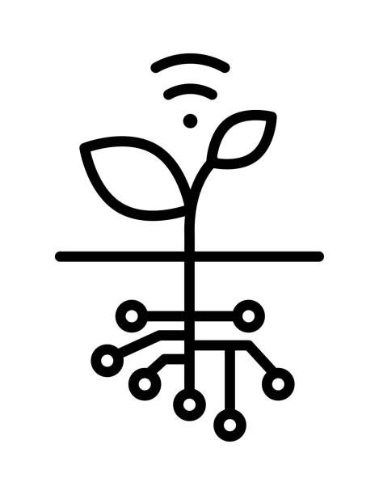
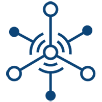

Introduction
The Internet of Things (IoT) is changing the world as we know it. With the ability to connect devices, vehicles, and other items to the internet and collect data, IoT is transforming various industries. In this blog post, we will explore how IoT is being used in different sectors, the benefits it brings, and the challenges of implementing it. According to a report by IDC, the global spending on IoT is expected to reach $1.1 trillion by 2023. This shows the growing interest and investment in IoT technology.
IoT in Healthcare
IoT technology has disrupted the healthcare industry, which has been an early adopter of this technology. With IoT-enabled devices such as wearables, implanted sensors, and smart medical equipment, patient care has been revolutionized. IoT has provided remote patient monitoring, predictive maintenance, and real-time tracking of medical equipment.
One example of IoT in healthcare is the use of wearables for remote patient monitoring. For instance, patients with chronic diseases can use wearable devices to track their vitals such as heart rate, blood pressure, and glucose levels. This data is transmitted to healthcare providers, who can use it to monitor patients' health and intervene before a critical event occurs.
Another example is the use of IoT for predictive maintenance in medical equipment. IoT-enabled sensors can monitor the condition of equipment and predict when maintenance is needed before a breakdown occurs. This can help prevent equipment failures and reduce downtime.
The global IoT healthcare market is projected to reach $534.3 billion by 2025, growing at a CAGR of 25.2% from 2020 to 2025, according to a report by MarketsandMarkets. The report also states that IoT technology is being used to improve patient care, remote monitoring, and drug management.
IoT in Manufacturing
IoT has also transformed the manufacturing industry, allowing manufacturers to improve efficiency, quality, and safety. Predictive maintenance, supply chain optimization, and smart factories are just some of the benefits that IoT brings to the manufacturing sector.
One example of IoT in manufacturing is the use of predictive maintenance. IoT sensors are used to track production processes and equipment, providing real-time data and alerts, which can help identify inefficiencies, predict and prevent machine breakdowns, and improve quality. For example, Rolls-Royce has implemented IoT-enabled predictive maintenance for its airplane engines. Sensors are embedded in the engines, which transmit data to a central hub that analyzes the data to predict maintenance needs. This has reduced downtime and increased the lifespan of the engines.
Another example is the use of IoT for supply chain optimization. IoT sensors can track inventory levels, monitor the condition of products during shipping, and optimize delivery routes, reducing costs and improving efficiency. For example, Walmart has implemented IoT-enabled sensors to track inventory levels, reducing waste and improving inventory management.
The adoption of IoT in manufacturing is projected to reach $310.3 billion by 2023, according to a report by MarketsandMarkets. The report also states that IoT is being used to improve quality control, predictive maintenance, and supply chain management.
IoT in Transportation
IoT technology has greatly impacted the transportation industry, providing benefits such as fleet management, real-time tracking of vehicles, and autonomous vehicles. IoT-enabled sensors provide real-time data on vehicle location, fuel consumption, and driver behavior, which can help reduce fuel costs, optimize routes, and improve safety.
One example of IoT in transportation is the use of fleet management systems. IoT sensors are used to track the location of vehicles, monitor fuel consumption, and optimize routes. This can help reduce fuel costs, improve delivery times, and reduce the risk of accidents. For instance, UPS has implemented IoT-enabled fleet management systems, which have reduced fuel consumption by 30 million gallons and saved 300,000 metric tons of CO2 emissions.
Another example is the use of IoT for autonomous vehicles. IoT-enabled sensors can provide real-time data on road conditions, traffic, and weather, which can help improve safety and reduce congestion. For example, Tesla's Autopilot system uses IoT-enabled sensors to detect obstacles, adjust speed, and navigate roads, making driving safer and more efficient.
The global connected car market size is expected to reach $225.16 billion by 2027, growing at a CAGR of 22.3% from 2020 to 2027, according to a report by Grand View Research. The report also states that IoT technology is being used to improve vehicle safety, reduce fuel consumption, and enhance the driving experience.

IoT in Agriculture
IoT has also seen significant advancements in the agriculture industry. Precision farming, soil monitoring, crop management, and livestock tracking are some of the benefits that IoT brings to agriculture.
One example of IoT in agriculture is precision farming. IoT sensors are used to collect data on soil moisture, temperature, and nutrient levels. This data is analyzed to optimize planting and harvesting times, reduce water usage, and improve crop yields. For instance, John Deere's IoT-enabled precision farming technology allows farmers to collect real-time data on soil conditions, weather, and crop growth, which can help reduce costs and increase efficiency.
Another example is the use of IoT for livestock tracking. IoT sensors can be used to monitor the location, health, and behavior of livestock. This data can be used to improve breeding programs, reduce disease outbreaks, and improve the overall health of the herd. For example, Ceres Tag, an Australian startup, has developed IoT-enabled ear tags for cattle. These tags provide real-time data on the location and behavior of the animals, helping farmers to better manage their herds.
The global IoT in agriculture market is expected to reach $30.8 billion by 2025, growing at a CAGR of 19.3% from 2020 to 2025, according to a report by MarketsandMarkets. The report also states that IoT technology is being used to improve crop yields, reduce water usage, and monitor livestock.

Challenges of IoT implementation
Despite the numerous benefits of IoT, there are several challenges to implementing this technology. One major challenge is security. As more devices become connected to the internet, the risk of cyber attacks increases. This highlights the importance of implementing security measures such as encryption, authentication, and access control.
Another challenge is the complexity of IoT systems. With multiple devices and systems communicating with each other, managing these systems can be difficult. This requires specialized skills and expertise, which can be a challenge for organizations lacking the necessary resources.
According to a report by Bain & Company, only about 30% of IoT projects are successful. The report states that challenges such as security, complexity, and lack of expertise can hinder the success of IoT implementation.
Conclusion
IoT technology is transforming various industries, providing benefits such as improved efficiency, increased safety, and better quality. Healthcare, manufacturing, transportation, and agriculture are just some of the industries that are experiencing the IoT revolution. However, implementing IoT comes with its challenges, such as security and complexity. With the right approach, these challenges can be addressed, and organizations can fully realize the benefits of IoT.